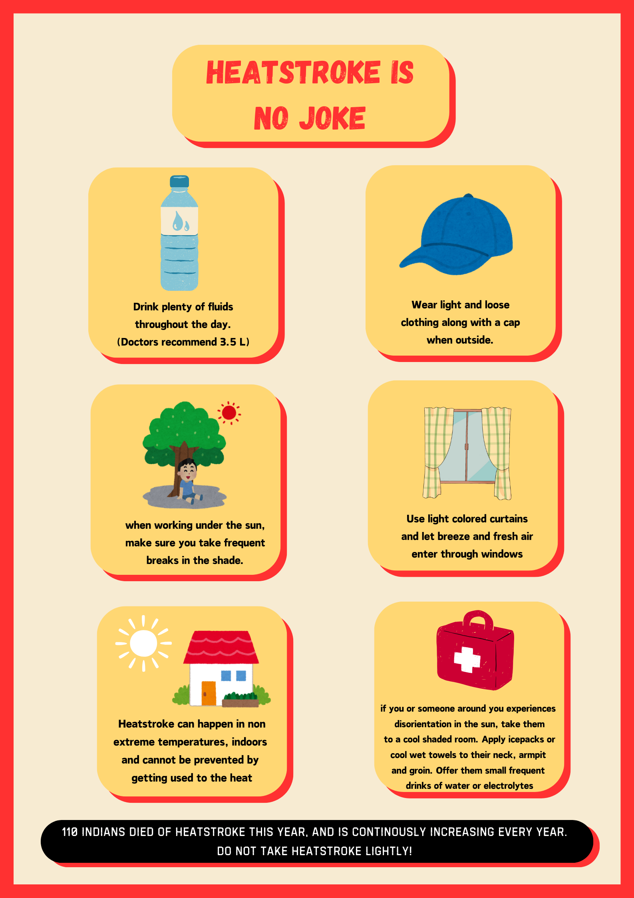

GROUP 10 Community Project: Rise In Temperature In Mumbai
Poster
our group sent a questionnaire to some of the employees at hinduja hospital as we as doctor dedhia regarding heatstroke. we used the responses we got through this questionnaire to create a poster that we not only sent on social media but also made solid copies of and distributed it to our neighbors, especially the elderly who are not on social media and are at high risk of heastroke
